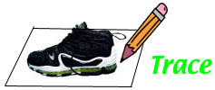
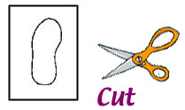
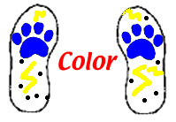
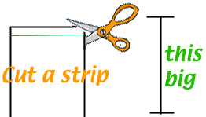
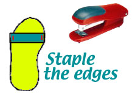

What you need:
|  | On one piece of paper, use a pencil to trace around your favorite pair of shoes. |
|  | Cut out your shoe shapes. |
|  | Color the shoe shapes. Be sure to put a thunderpaw on them and lots of bright colors. |
|  | Cut 2 strips from your other piece of paper. They should be about 1 inch wide. You can decorate them too. |
|  | Put your foot on the shoe shape and put the strip across so you can get it just the right length. Staple each side of the strip so it makes the thunderpaw stay on. Trim any left over paper. |
Put on your thunderpaws and have a good time thunderpawing around the house. Make sure that you make all sorts of thundering noises!